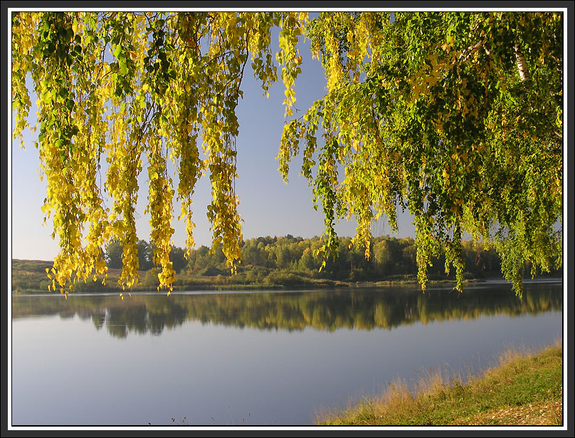
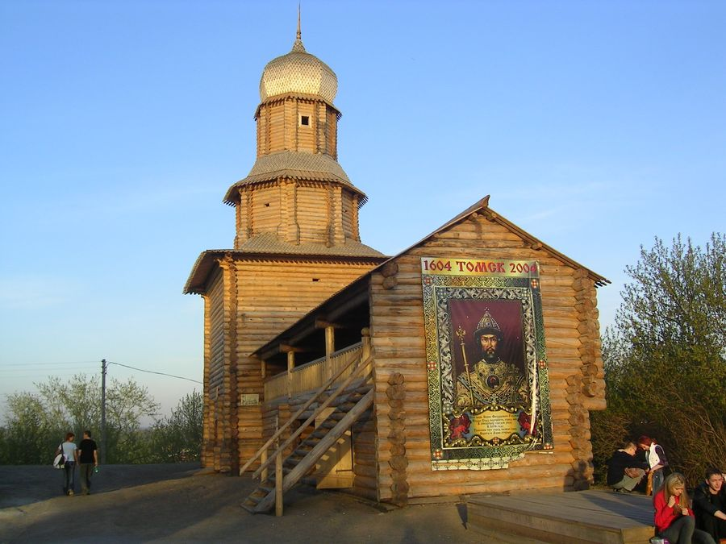

20 января 1604 года в Москву с посольством ко двору русского царя Бориса Годунова приехали послы во главе с князем татарского племени эушта Тояном, с просьбой о приёме эуштинского племени под власть Москвы и о возведении на реке Томи русского города для защиты эуштинцев от нападений воинственных соседей — киргизов и калмыков[2].
 25 марта 1604 года Борис Годунов послал казачьего голову Гаврилу Писемского из Сургута и стрелецкого голову Василия Тыркова из Тобольска с заданием основать крепость на берегу реки Томи, в татарской земле, завести вокруг него государеву пашню и привести в подданство российскому царю окрестные народы[2].
Томский острог был основан на южном мысу Воскресенской горы, возвышающейся над правым берегом Томи, в 60 км от её впадения в Обь и недалеко от устья таёжной речки Ушайки. К 7 октября 1604 года все строительные работы были завершены[3], и эта дата и считается днём рождения Томска (День города отмечается 7 июня, так как осенью плохая погода часто мешает проведению праздника). Он стал важным стратегическим военным центром, в течение всего XVII века обеспечивавшим безопасность местного населения — в 1614, 1617, 1657 и 1698 годах отражал набеги кочевников.[4]
В XVIII веке границы российского государства отодвинулись далеко на юг и восток, местные кочевые племена были усмирены, и Томск потерял своё оборонительное значение. Начиная с середины XVIII века и вплоть до советских времён Томск становится местом ссылки. Так, здесь были в ссылке Ибрагим Ганнибал, Гавриил Батеньков, Михаил Бакунин, Николай Эрдман, Густав Шпет, Николай Клюев.[5]
В 1719 году Томск был причислен к Енисейской провинции, в 1726 году — к Тобольской, а в 1782 году получил статус областного города Тобольского наместничества[6].
После создания Сибирского тракта Томск стал важным центром транзитной торговли, в 1738 году в Томске возникает Ямская служба[7]. Постепенно город вырос до статуса регионального административного центра и в 1804 году стал центром огромной Томской губернии, которая включала в себя территории нынешних Алтайского края, Кемеровской, Новосибирской и Томской областей, Восточно-Казахстанской области (Казахстан) и часть Красноярского края[7].
В начале XIX века для обеспечения больших перспектив развития города был создан генеральный план развития:
Проект предполагал существенное увеличение площади городской территории, «в основу планировки была положена… веерная схема, отвечавшая сложным условиям рельефа местности». В южной части города, на Юрточной горе, был запроектирован новый общегородской центр, в ансамбле которого комплекс крупномасштабных административных зданий должен был сформировать примыкающую к Почтамтской улице главную городскую площадь и ценром её композиции должен был стать православный собор. После окончательного согласования на месте, генеральный план города 8 августа 1830 года был утверждён императором Николаем I[8].
Начиная с конца 1830-х годов население Томска быстро росло благодаря увеличивающейся золотодобыче в Сибири. 
При строительстве Транссибирской железнодорожной магистрали место для моста через реку Обь было выбрано значительно южнее Томска. В результате в районе этой переправы образовалось поселение, которое затем выросло в город Новосибирск. Томск же оказался в стороне от железной дороги, и хотя в 1896 году была проложена железнодорожная ветка до Томска, она являлась тупиковой и город потерял значение транспортного узла.[9]
Советская власть в Томске была провозглашена 6 (19 декабря) 1917 года, а 26 января (8 февраля) 1918 года Томский совет распустил Сибирскую областную думу. В результате мятежа Чехословацкого корпуса 31 мая 1918 года Томск перешёл под власть белогвардейцев, а 22 декабря 1919 года Красная Армия окончательно установила советскую власть в городе. После окончания Гражданской войны Томск вошёл в состав Сибирского края, позднее преобразованного в Западно-Сибирский край, а в 1937 году Томск стал городом Новосибирской области[10].
Во время Великой Отечественной войны в Томск было эвакуировано около 30 предприятий из европейской части России, которые и стали основой промышленности города: за годы войны объём промышленного производства в Томске утроился[7]. Изменился и административный статус города — 13 августа 1944 года была образована Томская область и Томск стал областным центром. 229 тыс. томичей воевали на фронтах, из них 63,6 тыс. погибли, а 76 были удостоены звания Героя Советского Союза[11].
В Томске сохранилось большое количество памятников деревянного зодчества, созданных в основном в конце XIX века, однако со временем их число становится всё меньше[12]. В 1970 году городу был присвоен статус исторического города. В ходе Перестройки были сняты ограничения на посещение города иностранцами.
В 1990-е годы в Томске, как и в большинстве городов России, произошёл спад промышленного производства, особенно в машиностроении, ориентированном на военные госзаказы, в оказавшейся неконкурентоспособной лёгкой промышленности. Перестали существовать приборный завод, радиотехнический завод; испытывал проблемы нефтехимический комбинат, несколько раз менявший собственника. Экономическая ситуация улучшилась после дефолта 1998 года и последовавшего за ним оживления экономики страны.
В 2004 году Томску исполнилось 400 лет, руководство города и области добилось, за счёт подготовки к юбилею, выделения значительных средств из федерального бюджета на развитие города, в частности, на ремонт улиц, однако празднование юбилея, намеченное на начало сентября, совпало с Бесланскими событиями и было отменено[13]. В 2005 году правительство России объявило о создании на территории Томска особой экономической зоны технико-внедренческого типа, что предполагает инвестиции в экономику города и создание инновационных организаций[14]. В апреле 2006 года в Томске состоялась встреча на высшем уровне между федеральным канцлером Германии Ангелой Меркель и президентом России Владимиром Путиным[15].
6 декабря 2006 года Александр Макаров, на тот момент мэр города (с 1996 года), был помещён в следственный изолятор, 11 декабря суд отстранил его от должности мэра Томска, а 12 декабря ему были предъявлены обвинения по части 5 статьи 33 (соучастие в преступлении), части 3 статьи 163 (вымогательство), части 2 статьи 285 (злоупотребление должностными полномочиями) УК РФ. Александр Макаров не признаёт свою вину[16]. После отстранения Макарова от должности, его обязанности исполнял первый заместитель мэра Игорь Шатурный. В настоящее время временно исполняет обязанности главы города председатель томской городской Думы, первый заместитель мэра Томска Николай Николайчук[17].